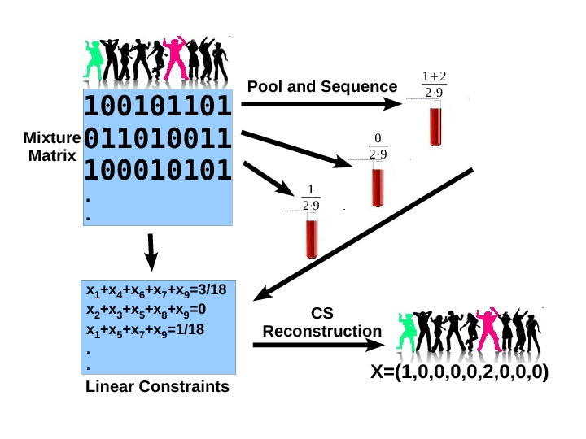

ComSeq
Overview
NEW! (April 2013): The latest version of ComSeq is now available from
GitHub .
The package at the Broad Institute URL will not be updated.
ComSeq is a set of utilities used for simulating and analyzing
compressed-sensing pooling design experiments for
next-generation sequencing projects. The aim is to identify
novel rare alleles, or detect individuals who are carriers of
known SNPs in a large population. The package enables an
in-silico simulation of a sequencing pooling experiments,
including modeling of sequencing error parameters. The package
also enables reconstructing genotypes of individuals profiled
in real experiments. Detailed instructions and usage examples
are given in the README file.

About
ComSeq is a collaboration between the Broad Institute, the
Open University of Israel , and the Weizmann Institute of Science.
If you use the package please cite the following paper:
Identification of Rare-Alleles And Their Carriers Using Compressed Se(que)nsing
N. Shental, A. Amir and O. Zuk, Nucleic Acid Research (2010)
ComSeq Installation
ComSeq includes a set of Matlab functions which can be individually used. You can download the whole package, or individual functions below. To install the package simply download the file comseq.tgz to a directory of your choice, extract it, and add to your Matlab path. You can also obtain a stand-alone executible for various platforms upon request. The package uses the GPSR algorithm. We thank Mário Figueiredo for allowing us to include it in this package.
Contact
For any questions or comments, please contact Noam Shental or Or Zuk
| applyGPSR.m | - | Runs the GPSR algorithm - using the default parameters. |
| displaySimulationParameters.m | - | Prints the parameters used for simulations | GPSR_BB.m | - | The GPSR solver. |
| modifySolution.m | - | Discretize solution: find rounded solution with minimal squared error with respect to measurements |
| normalizeRows.m | - | Normalize matrix rows |
| optimize_experimental_setting.m | - | Computes the maximal sample size we can reconstruct for a given number of lanes, or the minimal number of lanes sufficient to reconstruct a certain number of individuals. see optimize_experiment_settings_example.m for an example |
| optimize_experiment_settings_example.m | - | Example of using the function optimize_experiment_setting.m for computing the maximal sample size for a given number of lanes. |
| save_experiment_settings.m | - | Save experimental parameters in a text file (including the pooling matrix) |
| pooling_example.m | - | Simulate a single case of carriers reconstruction |
| simulateCSseq.m | - | Simulate and reconstruct a genotype vector in a specific setting. | reconstruct_experiment_example.m | - | Reconstruct a genotype vector based on a sequencer's reads. |
| README.txt | - | Documentation on the ComSeq package |
| comseq.tgz | - | Download the whole package. |